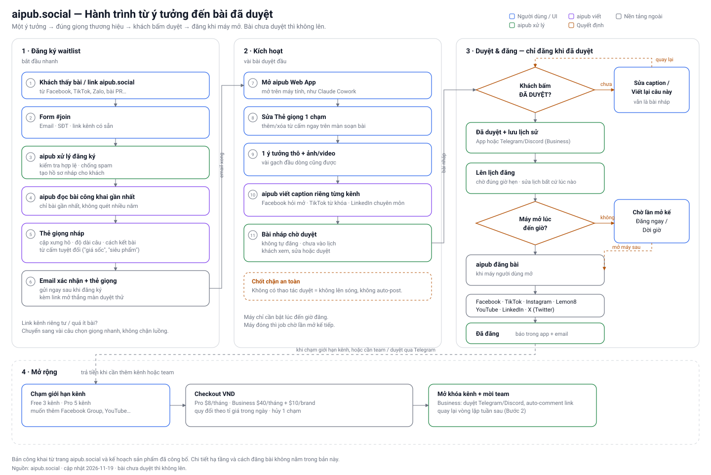

0xdonniechu.github.io · 2026-11-19 · Bản công khai
aipub.social — Hành trình từ ý tưởng đến bài đã duyệt
Một ý tưởng, caption riêng cho từng kênh, và chỉ đăng khi khách bấm duyệt. Trang này là bản công khai của luồng người dùng; chi tiết hạ tầng và cách đăng bài được lược bỏ.


Bốn chặng
1 · Đăng ký waitlist
Khách để lại email, số điện thoại và link kênh đang có. aipub đọc vài bài công khai gần nhất, dựng thẻ giọng nháp, rồi gửi email xác nhận kèm thẻ giọng.
2 · Kích hoạt
Khách mở app, sửa nhanh thẻ giọng, thả một ý tưởng thô kèm ảnh hoặc video. aipub viết caption riêng cho từng kênh và để tất cả chờ khách duyệt.
3 · Duyệt và đăng
Khách bấm ĐÃ DUYỆT hoặc sửa lại. Bài đã duyệt mới vào lịch; khi máy mở đúng giờ hẹn, aipub đăng và báo lại trong app cùng email.
4 · Mở rộng
Chạm giới hạn kênh của gói hiện tại thì nâng Pro hoặc Business, mở thêm kênh, mời team và có thể duyệt qua Telegram/Discord.
Ba điều giữ nguyên
- Bài chưa duyệt thì không lên. Không có thao tác duyệt rõ ràng thì bài không vào lịch và không được đăng.
- Máy chỉ cần bật lúc đến giờ đăng. Nếu lúc hẹn máy đang đóng, lần mở kế tiếp khách chọn đăng ngay hoặc dời giờ.
- Không đếm credit, không giới hạn số bài. Giá tính theo độ phủ kênh và quy mô vận hành, không theo số bài đăng.
Điều trang này cố ý không nói
Bản công khai không mô tả hạ tầng backend, cách aipub đăng bài, hay các bước xử lý nội bộ. Trang sản phẩm chỉ nói “đăng qua aipub”.
Nguồn
Dựng từ nội dung công khai trên aipub.social và kế hoạch sản phẩm đã công bố của aipub. Sơ đồ là bản diễn giải luồng người dùng, không phải đặc tả kỹ thuật.
Cập nhật 2026-11-19 · về mục lục báo cáo · aipub.social